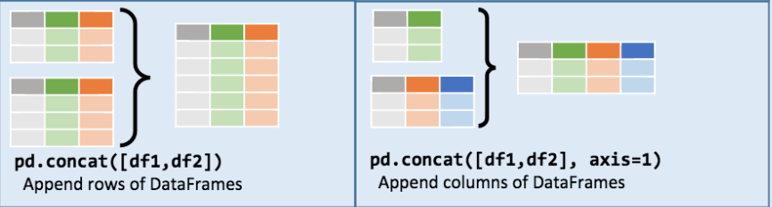
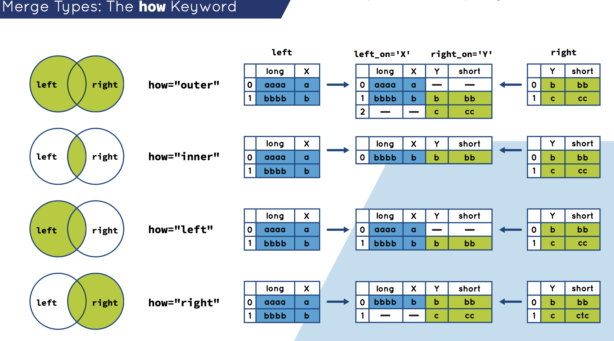
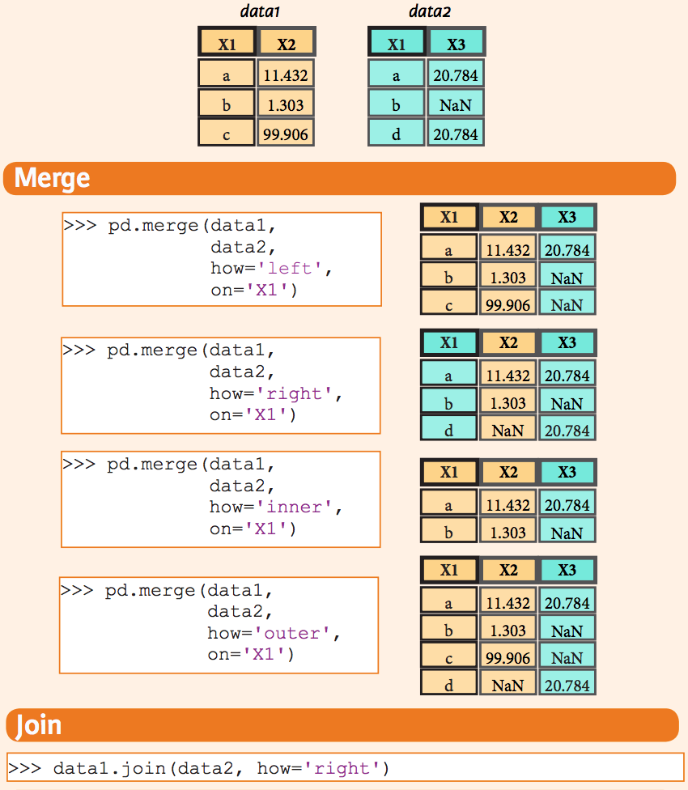

Pandas
Table of Contents
- 1. 核心数据结构
- 1.1. 索引对象
- 1.2. Panel
- 1.3. Series
- 1.4. DataFrame
- 1.4.1. 从字典创建
- 1.4.2. 从结构化数据列表创建
- 1.4.3. 从字典列表创建
- 1.4.4. 从元组字典创建
- 1.4.5. 从 Series 创建
- 1.4.6. 指定行列索引创建
- 1.4.7. 转置
- 1.4.8. 算数运算填充
- 1.4.9. 和 Series 之间的运算（广播机制）
- 1.4.10. 应用函数
- 1.4.11. 行/列映射 (apply)
- 1.4.12. 逐元素映射 (applymap)
- 1.4.13. 排序(sort_index/sort_values)
- 1.4.14. 排名(rank)
- 1.4.15. 转换为 ndarray 对象
- 1.4.16. 统计
- 1.4.17. concat
- 1.4.18. merge / join
- 2. 索引
- 3. 附录
Table of Contents
- 1. 核心数据结构
- 1.1. 索引对象
- 1.2. Panel
- 1.3. Series
- 1.4. DataFrame
- 1.4.1. 从字典创建
- 1.4.2. 从结构化数据列表创建
- 1.4.3. 从字典列表创建
- 1.4.4. 从元组字典创建
- 1.4.5. 从 Series 创建
- 1.4.6. 指定行列索引创建
- 1.4.7. 转置
- 1.4.8. 算数运算填充
- 1.4.9. 和 Series 之间的运算（广播机制）
- 1.4.10. 应用函数
- 1.4.11. 行/列映射 (apply)
- 1.4.12. 逐元素映射 (applymap)
- 1.4.13. 排序(sort_index/sort_values)
- 1.4.14. 排名(rank)
- 1.4.15. 转换为 ndarray 对象
- 1.4.16. 统计
- 1.4.17. concat
- 1.4.18. merge / join
- 2. 索引
- 3. 附录
| Author | Hao Ruan (haoru@cisco.com) |
| Date | 2018-09-20 21:37:17 |
1 核心数据结构
1.1 索引对象
Pandas 中的索引对象适用于存储标签和其他元数据的。
索引对象是不可变的。
s = pd.Series(range(3), index=list('abc')) index = s.index log("index", index) log("index[1:]", index[1:]) try: index[1] = 'd' # TypeError except Exception as e: log("TypeError", e)
==================================== index ===================================== Index(['a', 'b', 'c'], dtype='object') ================================== index[1:] =================================== Index(['b', 'c'], dtype='object') ================================== TypeError =================================== Index does not support mutable operations
1.2 Panel
Panel 是三维带标签的数组。
Panel 由三个标签组成：
- items
- 坐标轴 0 ，索引对应的元素是一个 DataFrame
- major_axis
- 坐标轴 1 , DataFrame 里的行标签
- minor_axis
- 坐标轴 2 , DataFrame 里的列标签
1.3 Series
Series 是一维带标签的数组，数组里可以放任意的数据（整数，浮点数，字符串，Python Object）。
其基本的创建函数是： pd.Series(data, index=index)
其中 index 是一个列表，用来作为数据的标签。data 可以是不同的数据类型：
- Python 字典
- ndarray 对象
- 一个标量值，如 5
1.3.1 从 ndarray 创建
s = pd.Series(np.random.randn(5), index=['a', 'b', 'c', 'd', 'e']) log("s", s) log("s.index", s.index) s2 = pd.Series(np.random.randn(5)) log("s2", s2) log("s2.index", s2.index)
====================================== s ======================================= a -0.701251 b 1.857044 c -0.775307 d 0.652000 e 1.178334 dtype: float64 =================================== s.index ==================================== Index(['a', 'b', 'c', 'd', 'e'], dtype='object') ====================================== s2 ====================================== 0 0.393573 1 -0.042283 2 0.557877 3 2.094997 4 0.671984 dtype: float64 =================================== s2.index =================================== RangeIndex(start=0, stop=5, step=1)
1.3.2 从字典创建
d = {'a' : 0., 'b' : 1., 'd' : 3} s = pd.Series(d, index=list('abcd')) log("s", s)
====================================== s ======================================= a 0.0 b 1.0 c NaN d 3.0 dtype: float64
1.3.3 从标量创建
s = pd.Series(3, index=list('abcde')) log("s", s)
====================================== s ======================================= a 3 b 3 c 3 d 3 e 3 dtype: int64
1.3.4 赋值
s = pd.Series([4, 7, -5, 3], index=['d', 'b', 'a', 'c']) log("s", s) s['b':'a'] = 5 log("s", s)
====================================== s ======================================= d 4 b 7 a -5 c 3 dtype: int64 ====================================== s ======================================= d 4 b 5 a 5 c 3 dtype: int64
1.3.5 与标量相乘
s = pd.Series([4, 7, -5, 3], index=['d', 'b', 'a', 'c']) log("s * 2", s * 2)
==================================== s * 2 ===================================== d 8 b 14 a -10 c 6 dtype: int64
1.3.6 应用数学函数
s = pd.Series([4, 7, -5, 3], index=['d', 'b', 'a', 'c']) log("np.exp(s)", np.exp(s))
================================== np.exp(s) =================================== d 54.598150 b 1096.633158 a 0.006738 c 20.085537 dtype: float64
1.3.7 映射 (apply)
s.apply(value_to_value_func) -> Series
1.3.8 排序(sort_index/sort_values)
s = pd.Series(range(4), index=list('dabc')) log("s.sort_index()", s.sort_index()) log("s.sort_values()", s.sort_values())
================================ s.sort_index() ================================ a 1 b 2 c 3 d 0 dtype: int64 =============================== s.sort_values() ================================ d 0 a 1 b 2 c 3 dtype: int64
1.3.9 唯一值(unique)，计数(count)和成员(isin)
s = pd.Series(list('cadaabbcc')) log("s.unique()", s.unique()) log("s.value_counts()", s.value_counts()) log("s.isin(['b', 'c'])", s.isin(['b', 'c']))
1.3.10 排名(rank)
s = pd.Series([7, -5, 7, 4, 2, 0, 4]) log("s.rank()", s.rank()) log("s.rank(method='first')", s.rank(method='first')) log("s.rank(ascending=False, method='max')", s.rank(ascending=False, method='max'))
=================================== s.rank() =================================== 0 6.5 1 1.0 2 6.5 3 4.5 4 3.0 5 2.0 6 4.5 dtype: float64 ============================ s.rank(method='first') ============================ 0 6.0 1 1.0 2 7.0 3 4.0 4 3.0 5 2.0 6 5.0 dtype: float64 ==================== s.rank(ascending=False, method='max') ===================== 0 2.0 1 7.0 2 2.0 3 4.0 4 5.0 5 6.0 6 4.0 dtype: float64
1.3.11 在字典上下文中使用
s = pd.Series([4, 7, -5, 3], index=['d', 'b', 'a', 'c']) log("'b' in s", 'b' in s) log("'e' in s", 'e' in s) log("7 in s", 7 in s)
=================================== 'b' in s =================================== True =================================== 'e' in s =================================== False ==================================== 7 in s ==================================== False
1.3.12 检查缺失数据
data = {'Ohio': 35000, 'Texas': 71000, 'Oregon': 16000, 'Utah': 5000} states = ['California', 'Ohio', 'Oregon', 'Texas'] s = pd.Series(data, index=states) log("s", s) log("s.isnull()", s.isnull()) log("s.notnull()", s.notnull())
====================================== s ======================================= California NaN Ohio 35000.0 Oregon 16000.0 Texas 71000.0 dtype: float64 ================================== s.isnull() ================================== California True Ohio False Oregon False Texas False dtype: bool ================================= s.notnull() ================================== California False Ohio True Oregon True Texas True dtype: bool
1.4 DataFrame
DataFrame 是 二维带行索引和列索引的矩阵 。
可以把 DataFrame 想象成一个包含 已排序的列 的集合。
创建 DataFrame 的基本格式是：
pd.DataFrame(data, index=index, columns=columns)
其中 index 是行标签，=columns= 是列标签，=data= 可以是下面的数据：
- 由一维 numpy 数组，list，Series 构成的字典
- 二维 numpy 数组
- 一个 Series
- 另外的 DataFrame 对象
1.4.1 从字典创建
key 为 DataFrame 的列； value 为对应列下的值
d = {'one' : pd.Series([1, 2, 3], index=['a', 'b', 'c']), 'two' : pd.Series([1, 2, 3, 4], index=['a', 'b', 'c', 'd'])} log("pd.DataFrame(d)", pd.DataFrame(d)) log("pd.DataFrame(d, index=['d', 'b', 'a'])", pd.DataFrame(d, index=['d', 'b', 'a'])) log("pd.DataFrame(d, index=['d', 'b', 'a'], columns=['two', 'three'])", pd.DataFrame(d, index=['d', 'b', 'a'], columns=['two', 'three']))
=============================== pd.DataFrame(d) ================================ one two a 1.0 1 b 2.0 2 c 3.0 3 d NaN 4 ==================== pd.DataFrame(d, index=['d', 'b', 'a']) ==================== one two d NaN 4 b 2.0 2 a 1.0 1 ======= pd.DataFrame(d, index=['d', 'b', 'a'], columns=['two', 'three']) ======= two three d 4 NaN b 2 NaN a 1 NaN
d = {'one' : [1, 2, 3, 4], 'two' : [21, 22, 23, 24]} log("pd.DataFrame(d)", pd.DataFrame(d)) log("pd.DataFrame(d, index=['a', 'b', 'c', 'd'])", pd.DataFrame(d, index=['a', 'b', 'c', 'd']))
=============================== pd.DataFrame(d) ================================ one two 0 1 21 1 2 22 2 3 23 3 4 24 ================= pd.DataFrame(d, index=['a', 'b', 'c', 'd']) ================== one two a 1 21 b 2 22 c 3 23 d 4 24
df = pd.DataFrame({ 'A': 1, 'B': pd.Timestamp('20160301'), 'C': range(4), 'D': np.arange(5, 9), 'E': 'text', 'F': ['AA', 'BB', 'CC', 'DD']}) log("df", df)
====================================== df ====================================== A B C D E F 0 1 2016-03-01 0 5 text AA 1 1 2016-03-01 1 6 text BB 2 1 2016-03-01 2 7 text CC 3 1 2016-03-01 3 8 text DD
1.4.2 从结构化数据列表创建
data = [(1, 2.2, 'Hello'), (2, 3., "World")] log("pd.DataFrame(data)", pd.DataFrame(data)) log("pd.DataFrame(data, index=['first', 'second'], columns=['A', 'B', 'C'])", pd.DataFrame(data, index=['first', 'second'], columns=['A', 'B', 'C']))
============================== pd.DataFrame(data) ==============================
0 1 2
0 1 2.2 Hello
1 2 3.0 World
==== pd.DataFrame(data, index=['first', 'second'], columns=['A', 'B', 'C']) ====
A B C
first 1 2.2 Hello
second 2 3.0 World
1.4.3 从字典列表创建
data = [{'a': 1, 'b': 2}, {'a': 5, 'b': 10, 'c': 20}] log("pd.DataFrame(data)", pd.DataFrame(data)) log("pd.DataFrame(data, index=['first', 'second'])", pd.DataFrame(data, index=['first', 'second'])) log("pd.DataFrame(data, columns=['a', 'b'])", pd.DataFrame(data, columns=['a', 'b']))
============================== pd.DataFrame(data) ==============================
a b c
0 1 2 NaN
1 5 10 20.0
================ pd.DataFrame(data, index=['first', 'second']) =================
a b c
first 1 2 NaN
second 5 10 20.0
==================== pd.DataFrame(data, columns=['a', 'b']) ====================
a b
0 1 2
1 5 10
1.4.4 从元组字典创建
实际应用中，会通过数据清洗的方式，把数据整理成方便 Pandas 导入且可读性好的格式。 然后再通过 reindex/groupby 等方式转换成复杂数据结构。
d = {('a', 'b'): {('A', 'B'): 1, ('A', 'C'): 2}, ('a', 'a'): {('A', 'C'): 3, ('A', 'B'): 4}, ('a', 'c'): {('A', 'B'): 5, ('A', 'C'): 6}, ('b', 'a'): {('A', 'C'): 7, ('A', 'B'): 8}, ('b', 'b'): {('A', 'D'): 9, ('A', 'B'): 10}} # 多级标签 log("pd.DataFrame(d)", pd.DataFrame(d))
=============================== pd.DataFrame(d) ================================
a b
b a c a b
A B 1.0 4.0 5.0 8.0 10.0
C 2.0 3.0 6.0 7.0 NaN
D NaN NaN NaN NaN 9.0
1.4.5 从 Series 创建
s = pd.Series(np.random.randn(5), index=['a', 'b', 'c', 'd', 'e']) log("pd.DataFrame(s)", pd.DataFrame(s)) log("pd.DataFrame(s, index=['a', 'c', 'd'])", pd.DataFrame(s, index=['a', 'c', 'd'])) log("pd.DataFrame(s, index=['a', 'c', 'd'], columns=['A'])", pd.DataFrame(s, index=['a', 'c', 'd'], columns=['A']))
=============================== pd.DataFrame(s) ================================
0
a 1.052429
b -0.183841
c -0.567050
d -0.946448
e -0.245539
==================== pd.DataFrame(s, index=['a', 'c', 'd']) ====================
0
a 1.052429
c -0.567050
d -0.946448
============ pd.DataFrame(s, index=['a', 'c', 'd'], columns=['A']) =============
A
a 1.052429
c -0.567050
d -0.946448
1.4.6 指定行列索引创建
dates = pd.date_range('20160301', periods=6) log("dates", dates) df = pd.DataFrame(np.random.randn(6,4), index=dates, columns=list('ABCD')) log("df", df)
==================================== dates =====================================
DatetimeIndex(['2016-03-01', '2016-03-02', '2016-03-03', '2016-03-04',
'2016-03-05', '2016-03-06'],
dtype='datetime64[ns]', freq='D')
====================================== df ======================================
A B C D
2016-03-01 -0.048170 1.536653 0.286190 -0.105748
2016-03-02 0.212721 -0.019064 -0.235831 -0.123454
2016-03-03 -0.465780 0.908629 0.148821 0.736669
2016-03-04 1.020257 1.094551 0.508659 0.018455
2016-03-05 -0.065958 0.437436 -1.026936 0.028647
2016-03-06 -0.055553 0.853023 -0.155418 0.160215
1.4.7 转置
data = {'Nevada': {2001: 2.4, 2002: 2.9}, 'Ohio': {2001: 1.5, 2001: 1.7, 2002: 3.6}} df = pd.DataFrame(data) log("df", df) log("df.T", df.T)
====================================== df ======================================
Nevada Ohio
2001 2.4 1.7
2002 2.9 3.6
===================================== df.T =====================================
2001 2002
Nevada 2.4 2.9
Ohio 1.7 3.6
1.4.8 算数运算填充
df1 = pd.DataFrame(np.arange(12.).reshape((3, 4)), columns=list('abcd')) df2 = pd.DataFrame(np.arange(20.).reshape((4, 5)), columns=list('abcde')) log("df1", df1) log("df2", df2) log("df1 + df2", df1 + df2) log("df1.add(df2, fill_value=0)", df1.add(df2, fill_value=0))
===================================== df1 ======================================
a b c d
0 0.0 1.0 2.0 3.0
1 4.0 5.0 6.0 7.0
2 8.0 9.0 10.0 11.0
===================================== df2 ======================================
a b c d e
0 0.0 1.0 2.0 3.0 4.0
1 5.0 6.0 7.0 8.0 9.0
2 10.0 11.0 12.0 13.0 14.0
3 15.0 16.0 17.0 18.0 19.0
================================== df1 + df2 ===================================
a b c d e
0 0.0 2.0 4.0 6.0 NaN
1 9.0 11.0 13.0 15.0 NaN
2 18.0 20.0 22.0 24.0 NaN
3 NaN NaN NaN NaN NaN
========================== df1.add(df2, fill_value=0) ==========================
a b c d e
0 0.0 2.0 4.0 6.0 4.0
1 9.0 11.0 13.0 15.0 9.0
2 18.0 20.0 22.0 24.0 14.0
3 15.0 16.0 17.0 18.0 19.0
1.4.9 和 Series 之间的运算（广播机制）
默认会将 Series 的索引与 DataFrame 的列进行匹配，并广播到各行：
df = pd.DataFrame(np.arange(12.).reshape((4, 3)), columns=list('bde'), index=['Utah', 'Ohio', 'Texas', 'Oregon']) log("df", df) s = df.iloc[0] log("s", s) log("df - s", df - s) s2 = pd.Series(range(3), index=['b', 'e', 'f']) log("df + s2", df + s2)
====================================== df ======================================
b d e
Utah 0.0 1.0 2.0
Ohio 3.0 4.0 5.0
Texas 6.0 7.0 8.0
Oregon 9.0 10.0 11.0
====================================== s =======================================
b 0.0
d 1.0
e 2.0
Name: Utah, dtype: float64
==================================== df - s ====================================
b d e
Utah 0.0 0.0 0.0
Ohio 3.0 3.0 3.0
Texas 6.0 6.0 6.0
Oregon 9.0 9.0 9.0
=================================== df + s2 ====================================
b d e f
Utah 0.0 NaN 3.0 NaN
Ohio 3.0 NaN 6.0 NaN
Texas 6.0 NaN 9.0 NaN
Oregon 9.0 NaN 12.0 NaN
如果想在列上广播，在行上匹配，必须使用算数方法中的一种：
s3 = df['d'] log("df.sub(s3, axis='index')", df.sub(s3, axis='index'))
=========================== df.sub(s3, axis='index') ===========================
b d e
Utah -1.0 0.0 1.0
Ohio -1.0 0.0 1.0
Texas -1.0 0.0 1.0
Oregon -1.0 0.0 1.0
1.4.10 应用函数
从本质上讲，DataFrame 内部用的数据结构就是 numpy 的 ndarray 。
df = pd.DataFrame(np.random.randn(10, 4), columns=['one', 'two', 'three', 'four']) log("df", df) log("np.exp(df)", np.exp(df)) log("np.sin(df)", np.sin(df))
====================================== df ======================================
one two three four
0 0.384419 -0.261265 -0.776319 -1.083965
1 -0.280943 1.203641 0.392169 -2.484636
2 1.101764 0.041095 1.075932 0.543424
3 0.472131 0.070010 -0.199482 -0.140922
4 -0.479721 0.281841 1.163404 0.694684
5 -0.464032 -1.058426 -0.692909 0.244612
6 1.082909 1.101045 -1.151583 -1.061644
7 0.533688 -1.130648 -0.350829 1.444129
8 -0.019973 1.649555 1.037025 0.059973
9 -0.337814 -2.070719 1.277318 -0.913099
================================== np.exp(df) ==================================
one two three four
0 1.468760 0.770077 0.460097 0.338252
1 0.755072 3.332227 1.480187 0.083356
2 3.009471 1.041951 2.932725 1.721893
3 1.603407 1.072519 0.819155 0.868557
4 0.618956 1.325568 3.200812 2.003075
5 0.628743 0.347002 0.500119 1.277125
6 2.953258 3.007307 0.316136 0.345887
7 1.705209 0.322824 0.704104 4.238160
8 0.980226 5.204665 2.820814 1.061808
9 0.713328 0.126095 3.587005 0.401279
================================== np.sin(df) ==================================
one two three four
0 0.375020 -0.258303 -0.700658 -0.883820
1 -0.277262 0.933352 0.382193 -0.610710
2 0.892006 0.041083 0.880033 0.517070
3 0.454785 0.069953 -0.198162 -0.140456
4 -0.461532 0.278124 0.918157 0.640142
5 -0.447558 -0.871585 -0.638778 0.242180
6 0.883325 0.891681 -0.913410 -0.873158
7 0.508712 -0.904688 -0.343677 0.991988
8 -0.019971 0.996900 0.860895 0.059937
9 -0.331425 -0.877620 0.957243 -0.791402
1.4.11 行/列映射 (apply)
df.apply(series_to_series_func) -> DataFrame
df.apply(series_to_value_func) -> Series
df = pd.DataFrame(np.arange(12).reshape(4, 3), index=['one', 'two', 'three', 'four'], columns=list('ABC')) log("df", df) log("df.apply(lambda x: x.max() - x.min())", df.apply(lambda x: x.max() - x.min())) log("df.apply(lambda x: x.max() - x.min(), axis=1)", df.apply(lambda x: x.max() - x.min(), axis=1)) def min_max(x): return pd.Series([x.min(), x.max()], index=['min', 'max']) log("df.apply(min_max, axis=1)", df.apply(min_max, axis=1))
====================================== df ======================================
A B C
one 0 1 2
two 3 4 5
three 6 7 8
four 9 10 11
==================== df.apply(lambda x: x.max() - x.min()) =====================
A 9
B 9
C 9
dtype: int64
================ df.apply(lambda x: x.max() - x.min(), axis=1) =================
one 2
two 2
three 2
four 2
dtype: int64
========================== df.apply(min_max, axis=1) ===========================
min max
one 0 2
two 3 5
three 6 8
four 9 11
1.4.12 逐元素映射 (applymap)
df.applymap(value_to_value_func) -> DataFrame
df = pd.DataFrame(np.random.randn(4, 3), index=['one', 'two', 'three', 'four'], columns=list('ABC')) log("df", df) log("df.applymap(lambda x: '{0:.03f}'.format(x))", df.applymap(lambda x: '{0:.03f}'.format(x)))
1.4.13 排序(sort_index/sort_values)
df = pd.DataFrame(np.arange(8).reshape((2, 4)), index=['three', 'one'], columns=list('dabc')) log("df", df) log("df.sort_index()", df.sort_index()) log("df.sort_index(axis=1)", df.sort_index(axis=1)) log("df.sort_values(by='a')", df.sort_values(by='a')) log("df.sort_values(by=['a', 'b'])", df.sort_values(by=['a', 'b']))
====================================== df ======================================
d a b c
three 0 1 2 3
one 4 5 6 7
=============================== df.sort_index() ================================
d a b c
one 4 5 6 7
three 0 1 2 3
============================ df.sort_index(axis=1) =============================
a b c d
three 1 2 3 0
one 5 6 7 4
============================ df.sort_values(by='a') ============================
d a b c
three 0 1 2 3
one 4 5 6 7
======================== df.sort_values(by=['a', 'b']) =========================
d a b c
three 0 1 2 3
one 4 5 6 7
1.4.14 排名(rank)
df = pd.DataFrame({'b': [4.3, 7, -3, 2], 'a': [0, 1, 0, 1], 'c': [-2, 5, 8, -2.5]}) log("df", df) log("df.rank(axis='columns')", df.rank(axis='columns'))
====================================== df ======================================
b a c
0 4.3 0 -2.0
1 7.0 1 5.0
2 -3.0 0 8.0
3 2.0 1 -2.5
=========================== df.rank(axis='columns') ============================
b a c
0 3.0 2.0 1.0
1 3.0 1.0 2.0
2 1.0 2.0 3.0
3 3.0 2.0 1.0
打破平级关系方法列表
1.4.15 转换为 ndarray 对象
df = pd.DataFrame(np.random.randn(10, 4), columns=['one', 'two', 'three', 'four']) ary = np.asarray(df) log("ary", ary) log("ary == df.values", ary == df.values) log("ary == df", ary == df)
===================================== ary ======================================
[[ 2.04624678 -0.6312282 0.67979273 -0.44172316]
[-0.86094589 1.94346553 -2.14098712 -0.59540524]
[-0.15020567 0.89921316 1.57976154 1.28561354]
[ 0.36556931 0.74106876 -1.11107492 -0.0127461 ]
[ 1.0701633 -1.33064105 0.21082171 2.11969444]
[-1.40825621 0.77820317 0.28563787 -0.00318099]
[-0.41136998 0.73250492 1.42237664 -1.03227235]
[-0.05801189 0.2636244 -1.40155875 -1.28585849]
[-1.00331627 0.53425829 -0.37204681 0.34346003]
[-0.39496311 -1.61744328 -0.95510468 -0.5185989 ]]
=============================== ary == df.values ===============================
[[ True True True True]
[ True True True True]
[ True True True True]
[ True True True True]
[ True True True True]
[ True True True True]
[ True True True True]
[ True True True True]
[ True True True True]
[ True True True True]]
================================== ary == df ===================================
one two three four
0 True True True True
1 True True True True
2 True True True True
3 True True True True
4 True True True True
5 True True True True
6 True True True True
7 True True True True
8 True True True True
9 True True True True
1.4.16 统计
- count 非 NA 值个数
- describe 计算 Series 或 DataFrame 各列的汇总统计集合
- min, max
- argmin, argmax 最大最小值所在索引位置（整数）
- idxmin, idxmax 最大最小值所在索引标签
- quantile 计算样本从 0 到 1 间的分位数
- sum
- mean
- median
- mad 平均值的平均绝对偏差
- mod 频繁统计
- prod 所有值的积
- var 样本方差
- std 标准差
- skew 样本偏度（第三时刻）值
- kurt 样本峰度（第四时刻）值
- cumsum 累计值
- cummin, cummax
- cumprod
- diff 计算第一个算术差值（对时间序列有用）
- pct_change 计算百分比
1.4.17 concat

origin_df = pd.DataFrame(np.random.randn(10, 4), columns=list('ABCD')) concatted = pd.concat([origin_df.iloc[:3], origin_df.iloc[3:7], origin_df.iloc[7:]]) log("origin_df", origin_df) log("concatted", concatted) # (concatted == origin_df).all().all(): True
================================== origin_df ===================================
A B C D
0 0.755595 1.036145 -0.857988 0.229536
1 0.337109 -1.703817 0.533003 2.126698
2 0.155211 -1.056213 0.828939 2.576655
3 1.091366 -0.716061 1.995065 0.031306
4 -0.541699 -0.593141 -0.620846 -0.837288
5 0.914868 0.855716 -0.560497 0.435672
6 -0.918672 -0.645815 -0.252298 -0.276985
7 0.472277 1.547128 -2.137729 -0.090565
8 0.219269 -0.417487 0.324093 0.262393
9 -1.435991 -1.543388 0.403208 -0.268907
================================== concatted ===================================
A B C D
0 0.755595 1.036145 -0.857988 0.229536
1 0.337109 -1.703817 0.533003 2.126698
2 0.155211 -1.056213 0.828939 2.576655
3 1.091366 -0.716061 1.995065 0.031306
4 -0.541699 -0.593141 -0.620846 -0.837288
5 0.914868 0.855716 -0.560497 0.435672
6 -0.918672 -0.645815 -0.252298 -0.276985
7 0.472277 1.547128 -2.137729 -0.090565
8 0.219269 -0.417487 0.324093 0.262393
9 -1.435991 -1.543388 0.403208 -0.268907
1.4.18 merge / join
原理：( join 底层仍然是使用 merge )


left = pd.DataFrame({'key': ['foo', 'foo'], 'lval': [1, 2]}) right = pd.DataFrame({'key': ['foo', 'foo'], 'rval': [4, 5]}) # SELECT * FROM left INNER JOIN right ON left.key = right.key; merged = pd.merge(left, right, on='key') log("left", left) log("right", right) log("merged", merged)
===================================== left ===================================== key lval 0 foo 1 1 foo 2 ==================================== right ===================================== key rval 0 foo 4 1 foo 5 ==================================== merged ==================================== key lval rval 0 foo 1 4 1 foo 1 5 2 foo 2 4 3 foo 2 5
2 索引
2.1 Series
2.1.1 设置对象自身和索引的 name 属性
data = {'Ohio': 35000, 'Texas': 71000, 'Oregon': 16000, 'Utah': 5000} states = ['California', 'Ohio', 'Oregon', 'Texas'] s = pd.Series(data, index=states) s.name = 'population' s.index.name = 'state' log("s", s)
====================================== s ======================================= state California NaN Ohio 35000.0 Oregon 16000.0 Texas 71000.0 Name: population, dtype: float64
2.1.2 获取值和索引
s = pd.Series(np.random.randn(5), index=['a', 'b', 'c', 'd', 'e']) log("s", s) log("s.values", s.values) log("s.index", s.index)
====================================== s ======================================= a 0.007460 b -0.346364 c -1.524387 d -0.389066 e 0.464790 dtype: float64 =================================== s.values =================================== [ 0.00745967 -0.34636371 -1.52438655 -0.38906608 0.46479046] =================================== s.index ==================================== Index(['a', 'b', 'c', 'd', 'e'], dtype='object')
2.1.3 索引对齐
相同索引值才进行操作
s1 = pd.Series(np.random.randint(3, size=3), index=['a', 'c', 'e']) s2 = pd.Series(np.random.randint(3, size=3), index=['a', 'd', 'e']) log("s1", s1) log("s2", s2) log("s1 + s2", s1 + s2)
====================================== s1 ====================================== a 1 c 0 e 1 dtype: int64 ====================================== s2 ====================================== a 1 d 1 e 0 dtype: int64 =================================== s1 + s2 ==================================== a 2.0 c NaN d NaN e 1.0 dtype: float64
2.1.4 重建索引
s = pd.Series([4.5, 7.2, -5.3, 3.6], index=['d', 'b', 'a', 'c']) log("s", s) log("s.reindex(['a', 'b', 'c', 'd', 'e'])", s.reindex(['a', 'b', 'c', 'd', 'e']))
====================================== s ======================================= d 4.5 b 7.2 a -5.3 c 3.6 dtype: float64 ===================== s.reindex(['a', 'b', 'c', 'd', 'e']) ===================== a -5.3 b 7.2 c 3.6 d 4.5 e NaN dtype: float64
重建索引时插值: (reindex 方法的参数)
s = pd.Series(['blue', 'purple', 'yellow'], index=[0, 2, 4]) log("s", s) log("s.reindex(range(6), method='ffill')", s.reindex(range(6), method='ffill'))
====================================== s ======================================= 0 blue 2 purple 4 yellow dtype: object ===================== s.reindex(range(6), method='ffill') ====================== 0 blue 1 blue 2 purple 3 purple 4 yellow 5 yellow dtype: object
2.1.5 删除索引
s = pd.Series(np.arange(5.), index=list('abcde')) log("s", s) log("s.drop('c')", s.drop('c')) log("s.drop(['d', 'c'])", s.drop(['d', 'c']))
====================================== s =======================================
a 0.0
b 1.0
c 2.0
d 3.0
e 4.0
dtype: float64
================================= s.drop('c') ==================================
a 0.0
b 1.0
d 3.0
e 4.0
dtype: float64
============================== s.drop(['d', 'c']) ==============================
a 0.0
b 1.0
e 4.0
dtype: float64
2.1.6 标签索引
s = pd.Series([4, 7, -5, 3], index=['a', 'b', 'c', 'd']) log("s", s) log("s['a']", s['a']) s['d'] = 6 log("s[['c', 'a', 'd']]", s[['c', 'a', 'd']]) log("s['b' : 'c']", s['b' : 'c'])
====================================== s ======================================= a 4 b 7 c -5 d 3 dtype: int64 ==================================== s['a'] ==================================== 4 ============================== s[['c', 'a', 'd']] ============================== c -5 a 4 d 6 dtype: int64 ================================= s['b' : 'c'] ================================= b 7 c -5 dtype: int64
2.1.7 布尔索引
s = pd.Series([4, 7, -5, 3], index=['d', 'b', 'a', 'c']) log("s[s > 0]", s[s > 0])
=================================== s[s > 0] =================================== d 4 b 7 c 3 dtype: int64
2.2 DataFrame
2.2.1 设置行/列索引的 name 属性
data = {'Nevada': {2001: 2.4, 2002: 2.9}, 'Ohio': {2001: 1.5, 2001: 1.7, 2002: 3.6}} df = pd.DataFrame(data) df.index.name = 'year' df.columns.name = 'state' log("df", df)
====================================== df ====================================== state Nevada Ohio year 2001 2.4 1.7 2002 2.9 3.6
2.2.2 重建索引
在 DataFrame 中， reindex 可以改变行索引，列索引，也可以同时改变两者。
fill method 只对行重新索引有效，不适用列。
df = pd.DataFrame(np.arange(9).reshape((3,3)), index=list('acd'), columns=['Ohio', 'Texas', 'California']) log("df", df) # 重建行索引 log("df.reindex(['a', 'b', 'c', 'd'])", df.reindex(['a', 'b', 'c', 'd'])) # 重建列索引 states = ['Texas', 'Utah', 'California'] log("df.reindex(columns=states)", df.reindex(columns=states))
====================================== df ====================================== Ohio Texas California a 0 1 2 c 3 4 5 d 6 7 8 ======================= df.reindex(['a', 'b', 'c', 'd']) ======================= Ohio Texas California a 0.0 1.0 2.0 b NaN NaN NaN c 3.0 4.0 5.0 d 6.0 7.0 8.0 ========================== df.reindex(columns=states) ========================== Texas Utah California a 1 NaN 2 c 4 NaN 5 d 7 NaN 8
2.2.3 索引对齐
DataFrame 在进行数据计算时， 会自动按行和列进行数据对齐 。 最终的计算结果会合并两个 DataFrame 。
df1 = pd.DataFrame(np.arange(9.).reshape((3, 3)), columns=list('bcd'), index=['Ohio', 'Texas', 'Colorado']) df2 = pd.DataFrame(np.arange(12.).reshape((4, 3)), columns=list('bde'), index=['Utah', 'Ohio', 'Texas', 'Oregon']) log("df1", df1) log("df2", df2) log("df1 + df2", df1 + df2)
2.2.4 列赋值
当将列表或数组赋值给一个列时，长度必须和 DataFrame 的长度相匹配。
data = {'state': ['Ohio', 'Ohio', 'Ohio', 'Nevada', 'Nevada', 'Nevada'], 'year': [2000, 2001, 2002, 2001, 2002, 2003], 'pop': [1.5, 1.7, 3.6, 2.4, 2.9, 3.2]} columns = ['year', 'state', 'pop'] index = ['one', 'two', 'three', 'four', 'five', 'six'] df = pd.DataFrame(data, columns=columns, index=index) df['debt'] = 16.5 # 标量赋值 df['income'] = np.arange(6.) # 数组赋值 log("df", df)
====================================== df ======================================
year state pop debt income
one 2000 Ohio 1.5 16.5 0.0
two 2001 Ohio 1.7 16.5 1.0
three 2002 Ohio 3.6 16.5 2.0
four 2001 Nevada 2.4 16.5 3.0
five 2002 Nevada 2.9 16.5 4.0
six 2003 Nevada 3.2 16.5 5.0
将 Series 赋值给一列时，Series 的索引会按照 DataFrame 的索引重新排列。
val = pd.Series([-1.2, -1.5, -1.7], index=['two', 'four', 'five']) df['debt'] = val log("df", df)
====================================== df ======================================
year state pop debt income
one 2000 Ohio 1.5 NaN 0.0
two 2001 Ohio 1.7 -1.2 1.0
three 2002 Ohio 3.6 NaN 2.0
four 2001 Nevada 2.4 -1.5 3.0
five 2002 Nevada 2.9 -1.7 4.0
six 2003 Nevada 3.2 NaN 5.0
2.2.5 删除行/列
data = {'state': ['Ohio', 'Ohio', 'Ohio', 'Nevada', 'Nevada', 'Nevada'], 'year': [2000, 2001, 2002, 2001, 2002, 2003], 'pop': [1.5, 1.7, 3.6, 2.4, 2.9, 3.2]} columns = ['year', 'state', 'pop'] index = ['one', 'two', 'three', 'four', 'five', 'six'] df = pd.DataFrame(data, columns=columns, index=index) del df['pop'] yearSeries = df.pop('year') df.drop('state', axis='columns', inplace=True) log("df", df)
====================================== df ====================================== Empty DataFrame Columns: [] Index: [one, two, three, four, five, six]
df = pd.DataFrame(np.arange(16).reshape((4, 4)), index=["Ohio", "Colorado", "Utah", "New York"], columns=["one", "two", "three", "four"]) log("df", df) log("df.drop('Colorado')", df.drop('Colorado')) # 删除行 log("df.drop('two', axis='columns')", df.drop('two', axis='columns'))
====================================== df ======================================
one two three four
Ohio 0 1 2 3
Colorado 4 5 6 7
Utah 8 9 10 11
New York 12 13 14 15
============================= df.drop('Colorado') ==============================
one two three four
Ohio 0 1 2 3
Utah 8 9 10 11
New York 12 13 14 15
======================== df.drop('two', axis='columns') ========================
one three four
Ohio 0 2 3
Colorado 4 6 7
Utah 8 10 11
New York 12 14 15
2.2.6 标签索引
从 DataFrame 中玄虚的列是数据的 视图 ，而不是拷贝。
如果需要复制，应当显式地使用 Series 的 copy 方法。
返回的 Series 与原 DataFrame 有相同的索引，且 Series 的 name 属性也会被合理地设置。
data = {'state': ['Ohio', 'Ohio', 'Ohio', 'Nevada', 'Nevada', 'Nevada'], 'year': [2000, 2001, 2002, 2001, 2002, 2003], 'pop': [1.5, 1.7, 3.6, 2.4, 2.9, 3.2]} columns = ['year', 'state', 'pop'] df = pd.DataFrame(data, columns=columns) log("df", df) log("df['state']", df['state']) log("df.year", df.year) log("df[['state', 'pop']]", df[['state', 'pop']])
====================================== df ======================================
year state pop
0 2000 Ohio 1.5
1 2001 Ohio 1.7
2 2002 Ohio 3.6
3 2001 Nevada 2.4
4 2002 Nevada 2.9
5 2003 Nevada 3.2
================================= df['state'] ==================================
0 Ohio
1 Ohio
2 Ohio
3 Nevada
4 Nevada
5 Nevada
Name: state, dtype: object
=================================== df.year ====================================
0 2000
1 2001
2 2002
3 2001
4 2002
5 2003
Name: year, dtype: int64
============================= df[['state', 'pop']] =============================
state pop
0 Ohio 1.5
1 Ohio 1.7
2 Ohio 3.6
3 Nevada 2.4
4 Nevada 2.9
5 Nevada 3.2
2.2.7 正则索引
df = pd.DataFrame(np.random.randn(6, 4), index=list('ABCDEF'), columns=['one', 'two', 'three', 'four']) log("df", df) log("df.filter(regex=r'^t.*$')", df.filter(regex=r'^t.*$'))
====================================== df ======================================
one two three four
A 0.266558 0.390929 0.381822 -0.662022
B 0.947612 1.492351 1.824414 -0.682042
C 0.920167 -0.387809 -1.606654 -0.692762
D -0.491672 0.135303 1.653127 0.036277
E -0.922068 0.128126 -1.823203 0.054199
F -0.023060 -0.725380 0.062327 -0.608580
========================== df.filter(regex=r'^t.*$') ===========================
two three
A 0.390929 0.381822
B 1.492351 1.824414
C -0.387809 -1.606654
D 0.135303 1.653127
E 0.128126 -1.823203
F -0.725380 0.062327
2.2.8 整数索引
df = pd.DataFrame(np.arange(16).reshape((4, 4)), index=["Ohio", "Colorado", "Utah", "New York"], columns=["one", "two", "three", "four"]) log("df", df) log("df[:2]", df[:2])
====================================== df ======================================
one two three four
Ohio 0 1 2 3
Colorado 4 5 6 7
Utah 8 9 10 11
New York 12 13 14 15
==================================== df[:2] ====================================
one two three four
Ohio 0 1 2 3
Colorado 4 5 6 7
2.2.9 布尔索引
df = pd.DataFrame(np.arange(16).reshape((4, 4)), index=["Ohio", "Colorado", "Utah", "New York"], columns=["one", "two", "three", "four"]) log("df", df) log("df[df['three'] > 5]", df[df['three'] > 5])
====================================== df ======================================
one two three four
Ohio 0 1 2 3
Colorado 4 5 6 7
Utah 8 9 10 11
New York 12 13 14 15
============================= df[df['three'] > 5] ==============================
one two three four
Colorado 4 5 6 7
Utah 8 9 10 11
New York 12 13 14 15
2.2.10 loc 索引
df = pd.DataFrame(np.arange(16).reshape((4, 4)), index=["Ohio", "Colorado", "Utah", "New York"], columns=["one", "two", "three", "four"]) log("df", df) log("df.loc['Colorado', ['two', 'three']]", df.loc['Colorado', ['two', 'three']]) log("df.loc[:'Utah', 'two']", df.loc[:'Utah', 'two'])
====================================== df ======================================
one two three four
Ohio 0 1 2 3
Colorado 4 5 6 7
Utah 8 9 10 11
New York 12 13 14 15
===================== df.loc['Colorado', ['two', 'three']] =====================
two 5
three 6
Name: Colorado, dtype: int64
============================ df.loc[:'Utah', 'two'] ============================
Ohio 1
Colorado 5
Utah 9
Name: two, dtype: int64
2.2.11 iloc 索引
df = pd.DataFrame(np.arange(16).reshape((4, 4)), index=["Ohio", "Colorado", "Utah", "New York"], columns=["one", "two", "three", "four"]) log("df", df) log("df.iloc[2, [3, 0, 1]]", df.iloc[2, [3, 0, 1]]) log("df.iloc[[1, 2], [3, 0, 1]]", df.iloc[[1, 2], [3, 0, 1]]) log("df.iloc[:, :3][df.three > 5]", df.iloc[:, :3][df.three > 5])
====================================== df ======================================
one two three four
Ohio 0 1 2 3
Colorado 4 5 6 7
Utah 8 9 10 11
New York 12 13 14 15
============================ df.iloc[2, [3, 0, 1]] =============================
four 11
one 8
two 9
Name: Utah, dtype: int64
========================== df.iloc[[1, 2], [3, 0, 1]] ==========================
four one two
Colorado 7 4 5
Utah 11 8 9
========================= df.iloc[:, :3][df.three > 5] =========================
one two three
Colorado 4 5 6
Utah 8 9 10
New York 12 13 14
2.2.12 at 索引
df = pd.DataFrame(np.random.randn(6, 4), index=list('ABCDEF'), columns=['one', 'two', 'three', 'four']) log("df", df) log("df.at['A', 'one']", df.at['A', 'one'])
2.2.13 随机索引
df = pd.DataFrame(np.arange(16).reshape((4, 4)), index=["Ohio", "Colorado", "Utah", "New York"], columns=["one", "two", "three", "four"]) log("df", df) log("df.sample(frac=0.5)", df.sample(frac=0.5)) # Randomly log("df.sample(n=3)", df.sample(n=3)) # Randomly
====================================== df ======================================
one two three four
Ohio 0 1 2 3
Colorado 4 5 6 7
Utah 8 9 10 11
New York 12 13 14 15
============================= df.sample(frac=0.5) ==============================
one two three four
Ohio 0 1 2 3
New York 12 13 14 15
================================ df.sample(n=3) ================================
one two three four
Colorado 4 5 6 7
Ohio 0 1 2 3
Utah 8 9 10 11
2.2.14 重命名行/列
df = pd.DataFrame(np.random.randn(6, 4), index=list('ABCDEF'), columns=['one', 'two', 'three', 'four']) log("origin df", df) df.rename(columns={'three': 'san'}, inplace=True) log("df (column index renamed)", df) df.rename(index={'C': 'ccc'}, inplace=True) log("df (index renamed)", df)
================================== origin df ===================================
one two three four
A -1.293186 -1.303202 -0.434815 1.157079
B 0.559491 1.651170 1.130642 0.372430
C 0.087382 0.948737 0.103419 -0.364204
D 0.363415 0.463077 -1.130338 -1.252423
E -0.570689 -1.141226 0.144087 -0.297187
F 1.028409 1.627355 -1.264463 -0.109870
========================== df (column index renamed) ===========================
one two san four
A -1.293186 -1.303202 -0.434815 1.157079
B 0.559491 1.651170 1.130642 0.372430
C 0.087382 0.948737 0.103419 -0.364204
D 0.363415 0.463077 -1.130338 -1.252423
E -0.570689 -1.141226 0.144087 -0.297187
F 1.028409 1.627355 -1.264463 -0.109870
============================== df (index renamed) ==============================
one two san four
A -1.293186 -1.303202 -0.434815 1.157079
B 0.559491 1.651170 1.130642 0.372430
ccc 0.087382 0.948737 0.103419 -0.364204
D 0.363415 0.463077 -1.130338 -1.252423
E -0.570689 -1.141226 0.144087 -0.297187
F 1.028409 1.627355 -1.264463 -0.109870
3 附录
3.1 reindex 方法的参数
method
插值方式，
ffill为前向填充，bfill是后向填充- fill_value
limit
前向或后向填充时，所需填充的最大尺寸间隙（以元素数量）
tolerance
前向或后向填充时，所需填充的不精确匹配下的最大尺寸间隙（以绝对数字距离）
level
匹配 MultiIndex 级别的简单索引；否则选择子集
copy
如果为
True，即使新索引等于旧索引，也总是复制底层数据； 如果是False，则在索引相同时不复制数据